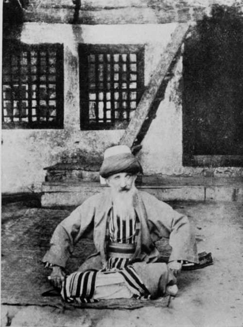

The Balkans Revisited : Albania. Part 8
Description
This section is from the book "Bird-Hunting Through Wild Europe", by R. B. Lodge. Also available from Amazon: Bird-Hunting Through Wild Europe.
The Balkans Revisited : Albania. Part 8
The Albanians are a fine people, with many good qualities, and I never felt more comfortable and thoroughly at home in my life than while living with them and sharing in their usual mode of life. Hospitality is their chief virtue, and the person of a guest is sacred. They are tall men, good-looking, with piercing eyes and with remarkably small and well-shaped hands and feet. Always accustomed to carry arms and to use them, they have a free and independent carriage, and look a much superior race to the Turk. I would back an Albanian mountaineer to account for three Turkish soldiers any day. I cannot account for the reputation which the Turkish soldier undoubtedly has as a fighter. All I have seen in Albania were miserable specimens of humanity, in ragged uniforms, in down-at-heel boots, or else in top-boots, which would assuredly be left behind if they marched a mile over an average Albanian road, with sullen, brutal, stupid faces with no redeeming feature or sign of any life, or animation, or self-respect. If it were not for the Albanians being divided by three religions, each one jealous of the other two, I believe they could sweep the Turk from their country to-morrow, if they could be properly disciplined under a good leader of their own race-rather a big 'if,' I admit. Still, they have done it once, four hundred years ago, and they still remember and mourn for Scanderbeg, their national hero, and remember how he freed them from the Turkish yoke.
Ploughing With Oxen
Ploughing With Buffaloes
Their code of honour may seem peculiar in our eyes, but such as it is they keep to it religiously, and, after all, there is much excuse for the custom of the vendetta among a proud and warlike people bereft of any semblance of law or order. They know there is no protection for life or property except that of their own right hands, and small blame to them if they exact a life for a life.
We had several impromptu shooting competitions, in which I could always beat all comers, partly, no doubt, owing to my being better armed than they were. Shooting one day at a hen's egg on the top of a stack fifty yards away, I only missed once out of five shots, whereas three of them only made one hit between them in about a dozen shots, though they all used a rest for the rifle. With my Greener .310 I could put a bullet through a reed-stem every time at twenty-five yards. With a Smith and Wesson pistol I could hit a mark the size of a shilling at twelve yards nearly every time ; so that I acquired a reputation for a good shot, very useful in a country like Albania.
One day we had a visitor, a tall and handsome man, who had one arm crippled. They told me the history of the accident. It seemed that about twelve months before he had been attacked by two men, and had received a Martini bullet through the arm, but in spite of the wound he had succeeded in killing both his assailants.
Another visitor we had once in the shape of a Turkish tramp on his way to Scutari. He arrived one wet afternoon perfectly plastered with mud from head to foot, and wet through. We were rather a large party that day, for several wayfarers had dropped in, among them two boys not more than sixteen and eighteen years old, both armed with Martini rifles. I was glad to see that these boys and the tramp were given a small table to themselves. I had been looking forward with apprehension to having to sit with him, for he was without exception the dirtiest human being I had ever seen, and scratched himself in a way that made me very uncomfortable. They must have noticed it, for he was allotted the stable to sleep in, a thing which had never happened during my stay ; and after he had departed next morning I noticed that they took the mat on which he had sat outside and gave it a good shaking.
I was very glad of my indiarubber basin, and they got used to my washing myself. At first in these countries they do not think they are showing you proper respect in allowing you to do so, but hover around and try to pour water over your hands. Their own ablutions are very scanty. After sleeping in all their clothes, including the fez, they pour a pint of water over the hands, and give their face a dab with their wet hands, still with the fez on, and that is all. At night they used to be exceedingly interested and amused in seeing me undress and wash, and get into my pyjamas and sleeping-bag for the night.
The log-fire, alongside of which we lay, was kept going all night, and I always slept like a top ; but my companions-and I noticed the same thing in Montenegro-though in perfect health all day, coughed all night as though in the last stage of consumption, and spat all over the floor in the most disgusting fashion. Luckily they draw the line at spitting on the mats ; this is never done.
On leaving these hospitable people I wanted to give them something, but it would never have done to have offered them money. The difficulty was got over by my giving one brother my watch, a cheap American 5s. one, and the elder one was immensely pleased with my spurs. He had borrowed them to ride into the town on his showy little grey stallion, and had evidently taken a great fancy to them, though, truth to say, I didn't like parting with such old friends, which have accompanied me into many parts of the world for at least thirty-five years. However, I had nothing which would have pleased him so much, and they had to go. As it happened I wanted them badly the very same day, for riding back to the town a stubborn, hard-mouthed brute of a horse, it took fright at something and nearly backed over the edge of a raised causeway about three feet high. I only had a stick, and the more I belaboured the beast the more backward it went until we were half over. I believe we should have gone over if a man had not seized him by the bridle, and led him past the offending object. If I had had my spurs I should never have been in such an ignominious and undignified position, but could have given him a lesson he would have remembered for some time. Travelling on these expeditions, when one has to ride everything in the shape of a horse which happens to be available, spurs are a sine qua non, and I have found them invaluable many and many a time.
B-'s successor at the Consulate most kindly put me up for a day and night until the arrival of the steamer, otherwise I should have had to stay at the dirty little albergo in the town. I had already slept there for a week on first coming to Durazzo, as the rooms were all occupied at the Consulate. There is no better hotel, but the place stank most frightfully, and nothing short of starvation could have compelled me to have eaten a meal in such a dirty hole. There had been a venerable-looking old Turkish officer staying there, with whom I had promised to change rooms, as it appeared that my room had been promised to him first, and that it had been given to me in the idea that I should only want it for one night. However, I didn't have to give up my room after all, for the old man was shot dead in his room opposite mine before I could do so. I had seen him sitting on his bed when I came round to dress for dinner, and half-an-hour later we had word that he had been shot with a revolver twice in the throat by an Albanian whom he had offended. Afterwards it was given out that he had committed suicide from fear of arrest for embezzlement. Which was the true version I do not know.

Street Scene
Head Of A Mohammedan Monastery
Photo by Bar-on Bornemisza
Before I left Albania I had seen the first White Stork, Swallows, and Hoopoes on April 4.
Continue to:
- prev: The Balkans Revisited : Albania. Part 7
- Table of Contents
- next: XII. The Balkans Revisited : Montenegro